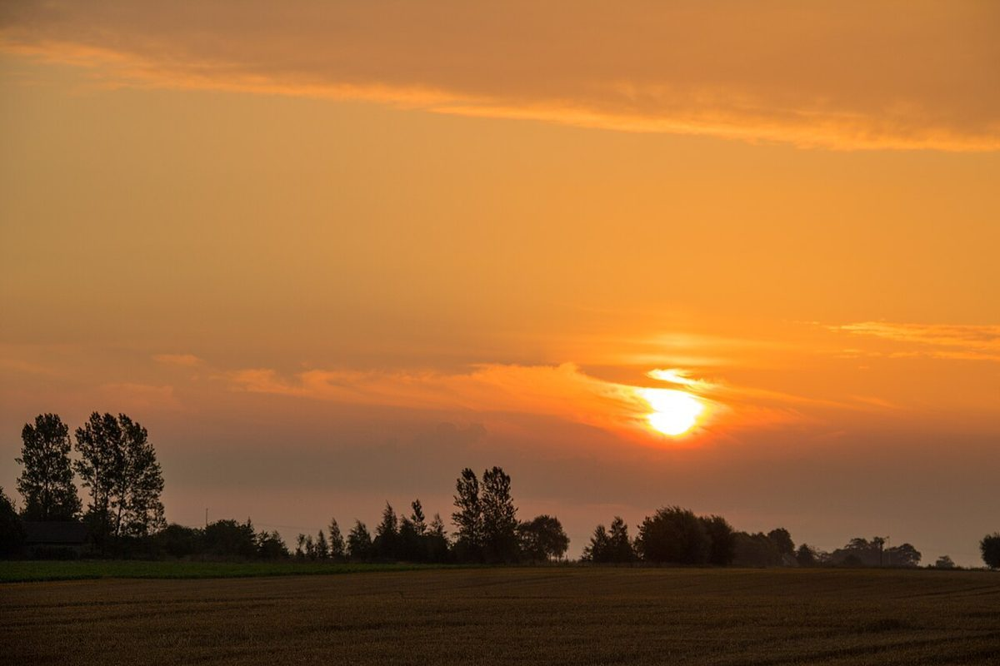

1 / Light air
店のこと
確認できているのは、所在地とInstagramのアカウントだけです。
「想像してみる」部分は制作側が想像して書いたものです。お店の実際の様子・考え・メニューとは関係ありません。
確認できていること
- 店名は「cafe CALM」、業種はカフェ
- 所在地は福井県越前市府中2丁目3-2
- 電話番号はなし。連絡はInstagramから
- 営業時間・定休日・メニュー・価格・ご予約・駐車場は準備中

想像してみる
「CALM」という言葉から
由来は分かりません。制作側は、落ち着いた気持ちになれるお店かもしれない、と想像しました。あくまで言葉の響きから思い浮かべただけで、実際のお店の姿ではありません。


町のこと
越前市について
お店の所在地は福井県越前市府中です。町の様子やお店との関わりについて、制作側は詳しいことを把握していないため、ここでは触れません。